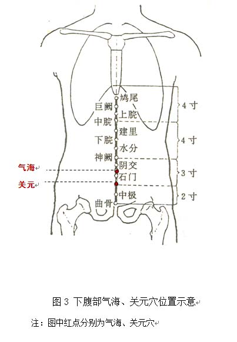

气虚质调理方法
1. 调体专用产品
【名称】正气饮
【食用方法】每次1-2袋，以适量温开水冲调食用，每天2次。
2.情志调摄
宜保持稳定乐观的心态，不可过度劳神。
宜欣赏节奏明快的音乐，如笛子曲《喜相逢》等。
3.饮食调养
宜选用性平偏温、健脾益气的食物，如大米、小米、南瓜、胡萝卜、山药、大枣、香菇、莲子、白扁豆、黄豆、豆腐、鸡肉、鸡蛋、鹌鹑（蛋）、牛肉等。尽量少吃或不吃空心菜、槟榔、生萝卜等耗气的食物。不宜多食生冷苦寒、辛辣燥热的食物。
参考食疗方：（1）山药粥：山药、粳米，具有补中益气功效，适合气虚体质者食用。
（2）黄芪童子鸡：童子鸡、生黄芪，具有益气补虚功效，适合气虚体质易自汗者食用。本方补气力量较强，对气虚表现比较明显者，可每隔半个月食用一次，不宜长期连续服用。
4.起居调摄
提倡劳逸结合，不要过于劳作，以免损伤正气。平时应避免汗出受风。居室环境应采用明亮的暖色调。
5.运动保健
宜选择比较柔和的传统健身项目，如八段锦。在做完全套八段锦动作后，将“两手攀足固肾腰”和“攒拳怒目增力气”各加做1～3遍。避免剧烈运动。
还可采用提肛法防止脏器下垂，提肛法：全身放松，注意力集中在会阴肛门部。首先吸气收腹，收缩并提升肛门，停顿2～3秒之后，再缓慢放松呼气，如此反复10～15次。
6. 穴位保健
（1）选穴：气海、关元。
（2）定位：气海位于下腹部，前正中线上，当脐中下1.5寸；关元位于下腹部，前正中线上，当脐下3寸（见图3）。
（3）操作：用掌根着力于穴位，做轻柔缓和的环旋活动，每个穴位按揉2～3分钟，每天操作1～2次。
还可以采用艾条温和灸，增加温阳益气的作用。点燃艾条或借助温灸盒，对穴位进行温灸，每次10分钟。艾条温和灸点燃端要与皮肤保持2～3厘米的距离，不要烫伤皮肤。温和灸可每周操作1次。
